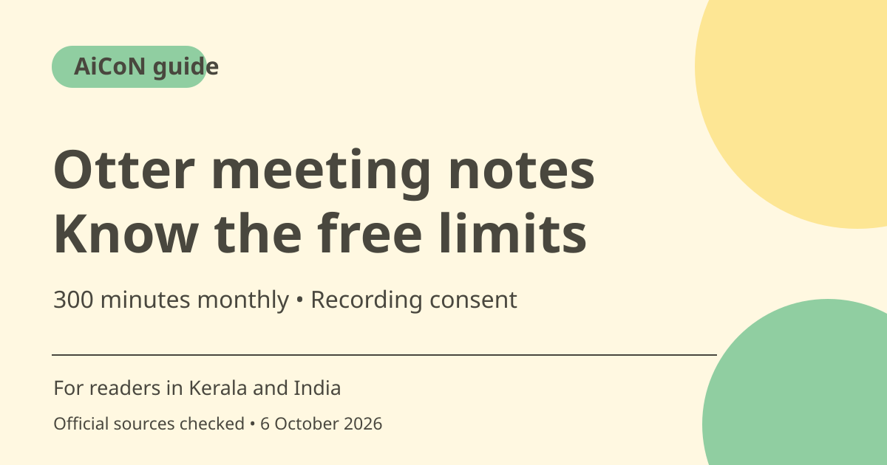

Otter AI meeting notes: free limits and safe recording
Otter records and transcribes conversations and offers AI chat about meetings. Basic is free, with 300 transcription minutes per month, a 30-minute limit per conversation and three lifetime file imports. Hindi and Malayalam transcription are not on its checked language list.

What is Otter?
Otter combines recording playback, live transcription, speaker identification and AI chat. Its pricing page lists Zoom, Microsoft Teams and Google Meet support, along with browser and mobile access. A transcript can help you revisit a meeting, but automated names, figures and action items still need checking.
Who should use it in India?
An English-speaking project team, student group or interviewer may find searchable notes useful. Test a short sample with the speakers and background noise you expect. The official language help lists English, Spanish, French, German, Japanese and Simplified Chinese. It does not list Hindi or Malayalam transcription. Chat translation into another language is a separate capability, not proof of source-audio transcription support.
Understand the three Free limits
Basic includes 300 monthly transcription minutes. Official Basic help also states 30 minutes per conversation or imported file and three imports per account, not per month. Deleting a conversation does not restore consumed transcription minutes. A long meeting can continue recording while access to the transcript is limited to the free duration, according to that help article.
History limits and important records
Basic help says the 25 most recent conversations are visible, with older conversations archived rather than deleted. This is not a promise of unlimited free history access. Do not use the service as the only copy of a critical record. Check access and export options before relying on it for repeated classes or client meetings.
Ask before recording
Tell participants what will be recorded, transcribed and shared, and obtain the permissions required for the meeting. Avoid automatically sending a bot into confidential calls without approval. Check any sharing destination or Channel: a useful personal transcript can become a disclosure if shared with the wrong group. Stop if recording is not permitted.
Monthly and annual pricing are different
The pricing page shows Pro at US$16.99 per user per month and a discounted US$8.49 figure with an asterisk. At an explicitly rough ₹95/USD assumption, those are about ₹1,614 and ₹807 respectively. The discounted amount is not presented here as a month-to-month payment: check its annual terms, full charge, eligibility and renewal at checkout.
How to use it, step by step
- Open otter.ai and choose Basic if you want to try the free plan. Review the current limits first.
- Confirm the audio language is supported and tell everyone what recording, transcription and sharing will occur.
- For a browser recording, sign in and click Record near Import. Allow microphone access only when appropriate.
- Speak into the microphone. Live transcription requires an active internet connection. For online meetings, Otter's help recommends its Notetaker rather than assuming a browser microphone captures every remote speaker.
- Pause, resume or stop through the playback controls. Rename the saved conversation so you can find it later.
- Review names, numbers, speakers and action items against the recording before acting on the notes.
- Keep sharing private unless participants and the intended audience are clear. Check monthly minutes, per-conversation duration and remaining lifetime imports before another session.
Cost, eligibility and limits
| Basic | ₹0. 300 monthly minutes, 30 minutes per conversation and three lifetime imports. Basic help also describes access to the 25 most recent conversations. |
|---|---|
| Pro reference | US$16.99 per user per month is roughly ₹1,614 at an editorial ₹95/USD estimate. US$8.49 is roughly ₹807, but is an asterisked discounted figure; confirm annual billing and full charge. Estimates are not local checkout quotes. |
| Languages | Checked transcription list: English, Spanish, French, German, Japanese and Simplified Chinese. Do not assume Hindi or Malayalam. |
| Caution | AI chat translation and transcription are different. Recording requires proper permission and an appropriate sharing audience. |
Frequently asked questions
Are three imports included every month?
No. Basic help says three imports per account, not per month.
Can it transcribe Malayalam meetings?
Malayalam is not in the official transcription list checked here. Chat translation does not establish Malayalam audio support.
Will deleting a recording restore minutes?
No. Basic help says deleted conversations still count toward the limit.
Official sources
Checked 6 October 2026. Features and prices can change. This is a guide, not a personal product test.